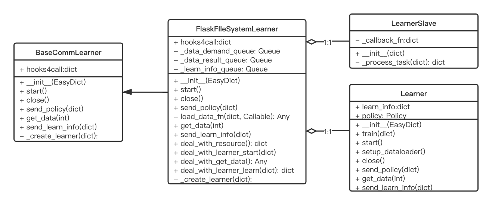
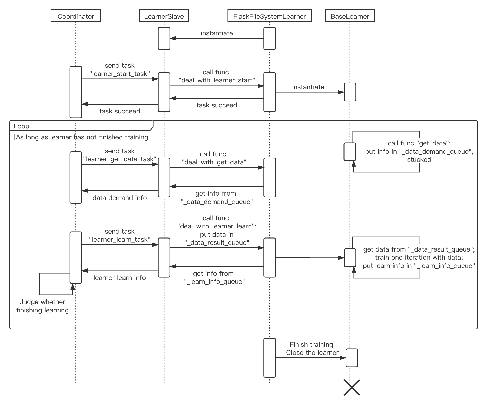

Learner Overview¶
Learner code can be mainly divided into three parts：
learner:
hook: Do some jobs at specific timings, e.g. save/load checkpoint, print log.
comm: Used in parallel mode to communicate with coordinator.
Base Learner¶
(ding/worker/learner/base_learner.py)
- Overview:
Base learner is the actual part for policy optimization given training data. It provides different interfaces for serial and parallel mode.
- Variables:
learn_info, priority_info, last_iter, name, rank, policy tick_time, monitor, log_buffer, logger, tb_logger
- Class interface method:
train: Interface for serial pipeline. Given training data, train for one iteration.call_hook: Call all hooks at a specific timing.register_hook: Register a new hook to the learner.save_checkpoint: Save current state_dict as a checkpoint.start: [For parallel mode] Start parallel learner training. In this method callstrainfor one-iteration trainingsetup_dataloader: [For parallel mode] Set up the dataloader.close: [For parallel mode] Finish parallel learning training and releasing all resources.
Note
In serial pipeline, learner and collector one by one, i.e. synchronous. So train method gets training data from outside(Usually sample from replay buffer).
While in parallel pipeline , learner and collector are both working at the same time, i.e. asynchronous. So start method can start the training process. In which process, learner fetches data from dataloader(From here we can see that dataloader only exists in parallel mode, not in serial mode) and training for many iterations, until reaches max_iteration or evaluation reaches stop_value. In each iteration, start actually call train to do a one-iteration training.
LearnerHook¶
(ding/worker/learner/learner_hook.py)
- Overview:
Hook is a module do some specific jobs. Learner hook is a derived abstract class, which adds the concept of “Position”. So learner can call hook at different timings.
- Variables:
name, priority, position
- Abstract class interface method for base hook class:
__init__: Initialization.__call__: Do the jobs of the hook. Derived class must override this method.
BaseCommLearner¶
(ding/worker/learner/base_comm_learner.py)
- Overview:
The base learner can independently complete the training work in serial pipeline; But for parallel pipeline, although the training interface is provided, there are still some problems remaining. For example, how to obtain data, how to communicate with the outside(coordinator, in DI-engine case), etc. Comm learner is the module which is responsible for solving these problems in parallel mode.
The comm learner does not actually perform training. It holds a base learner and solves communication-related problems for it. And actual training is still done by base learner.
Note
Therefore, serial pipeline can instantiate the base learner and use it directly; But in parallel pipeline, the comm learner should be instantiated, and then the comm learner creates the base learner through
_create_learner.In parallel mode, the learner needs to send out the data request by itself, and send current policy & learner information regularly. These operations will be completed by hooks. An important job of the comm learner is to register these hooks into the learner, that is, return the above hooks in
hooks4callmethod. Also, there are some functions that are needed in hooks, such asget_data,send_policy,send_learn_info. Comm learner should also implement those functions.- Variables:
None
- Class interface method:
__init__: Initialization.start: Start comm learner service.close: Close comm learner service.
- Abstract class interface method that should be overriden by derived class:
get_data: The function to fetch data. A parameter ofAsyncDataloadersend_policy: Store current policy to file system, so that collector can update its own policy on time.send_learn_info: Send learn info to coordinator periodically.hooks4call: A dict containing all hooks to send policy or learn_info.
Analysis of Training Process in Parallel Mode¶
Compared with the simple and easily understood serial mode, the parallel mode is more obscure due to the communication problems between the asynchronously running learner and collectors. Therefore, in this part, we will use the FlaskFileSystemLearner (ding/worker/learner/comm/flask_fs_learner.py), a derived comm learner that uses flask and file system to communicate, as an example to introduce the parallel mode. The mode analysis includes those procedures:
parallel pipeline entry deploying the coordinator
comm learner starting
communication connection being established between coordinator and comm learner
coordinator starting the comm learner and assigning tasks to it one or more times
coordinator and comm learner closing the communication connection

The above sequence diagram shows the process of coordinator and comm learner from being deployed in parallel pipeline, to establishing connection, to assigning actual task and executing, and finally to disconnection. As for the core, assigning actual task and executing, please continue reading.
Before introducing FlaskFileSystemLearner, it is necessary to introduce LearnerSlave, the class that is actually responsible for communicating with coordinator. LearnerSlave is derived from Slave. Its master is the attribute master in coordinator. LearnerSlave’s tasks include: processing tasks sent by the master, responding to the corresponding tasks using the callback functions passed by FlaskFileSystemLearner. Its essence is to use the master-slave mechanism to help FlaskFileSystemLearner complete the communication with the coordinator.
The relationship among the BaseCommLearner, FlaskFileSystemLearner, BaseLearner, LearnerSlave classes can be seen in the class diagram (This class diagram is not complete, because it only contains the parts essenntial to understanding the workflow described later):
Then we start to introduce the workflow of FlaskFileSystemLearner, that is, the assignment and execution process of actual tasks, which is also the omitted part of the first sequence diagram. You can refer to the following sequence diagram to help understand.
Create comm learner
Parallel pipeline will create a comm learner and call its
startmethod to start the comm learner serviceIn comm learner, a learner slave is first instantiated, and comm learner’s four functions are passed to the learner slave as callback functions (as for what is the callback function and what the callback function is used for, we will explain afterwards), learner slave will establish a connection with the coordinator through the pre-agreed ip address and port number.
In addition, comm learner creates several length == 1 queues to store some message dicts related to communication.
Create learner
Before coordinator sends the task, comm learner and learner slave are always on standby. Once the coordinator sends a task, the
_process_taskof the learner slave will receive the task.Coordinator knows the workflow of comm learner is: First establish a learner, and then repeat the process of acquiring data and training with data until the end. Therefore, the current task should be
learner_start_task, coordinator also passes information necessary to establish a learner.The information is passed to the learner slave, but the creation of the learner is in the comm learner. Here uses the callback function we mentioned just now. The callback function is implemented by comm learner, but is passed to the learner slave as a parameter, so the learner slave can call these functions.
For
learner_start_task, the learner slave calls thedeal_with_learner_startmethod of comm learner to complete the work of establishing the learner. After completion, the learner slave returns a successful message to the coordinator.Learner get data
After learner is established, dataloader will call
get_datamethod implemented in the comm learner to make an attempt to get data.get_datawill put the request in the_data_demand_queueof the comm learner, then try fetching data from_data_result_queue. If it is empty, it is blocked here.Let’s return back to the coordinator, when the coordinator receives the information that
learner_start_taskwas successfully executed, it sends the tasklearner_get_data_task. And learner slave callsdeal_with_get_datain comm learner to take out the request in_data_demand_queue, then returns it to the coordinator.Learner train
After coordinator receives the learner’s data request, it will send
learner_learn_taskto the learner slave, which contains the data (or metadata) requested by the learner. After the learner slave receives it, it calls thedeal_with_learner_learnmethod of the comm learner, puts the received data information into the_data_result_queue, and waits for the learner to finish training, and the training information can be obtained from the_learn_info_queue.Let’s return back to learner, learner is blocked because the dataloader cannot obtain data. Now that there is data information in
_data_result_queue, the dataloader can take it out(here by reading from file system), process it into the format required by the learner, and hand it over to the learner to train for one iteration. After the training is completed, learner stores learn information in_learn_info_queue.Let’s return back to comm learner’s
deal_with_learner_learnmethod of comm learner. It takes out learn information from_learn_info_queueand returns it to coordinator through learner slave. There are two cases as for learn information:Learner has not completed the training and needs more iterations: In this case, dataloader will call
get_dataagain, and coordinator will continue to send tasklearner_get_data_taskafter receiving the information, and return to process 3.Learner completes the training: Comm learner will close learner and wait for the coordinator to assign a new task
learner_start_taskagain, and return to process 2.
Comm learner close
You can manually close the comm learner by entering a command; Otherwise, the comm learner will be resident, waiting for the coordinator to assign a new task, and return the result after execution.